电工基础
知识领域：新能源电力与设备原理
学习模块：电力基础
学习深度：深入理解
版本：v1.0
一、模块定位与知识结构
1.1 为什么 HEMS 产品经理必须理解电工基础
HEMS（Home Energy Management System，家庭能源管理系统）表面上涉及电站监控、能流展示、设备控制、运行策略与数据统计，但它描述和控制的对象是遵循电路规律、能量守恒及设备物理约束的电力系统。
家庭能源系统中可能存在光伏组件、逆变器、储能电池、家庭负载、电网和电表。电工基础能帮助产品经理：
- 理解电力数据：明确电压、电流、功率和电能的含义。
- 理解能量流动：辨别能量从哪里产生、流向哪里，以及流向变化的原因。
- 理解设备边界：知道功率、电压、电流及温度限制的物理依据。
- 理解异常现象：区分物理异常、测量偏差、通信问题和软件计算问题。
- 进行技术判断：理解研发和硬件工程师提出的技术方案及适用条件。
1.2 知识结构
电工基础
├─ 01 电学基本物理量：电荷、电压、电流、电阻
├─ 02 电路与基本定律：电路、串并联、欧姆定律、基尔霍夫定律
├─ 03 电功率与电能：W、kW、Wh、kWh、损耗、效率
├─ 04 直流与交流：DC、AC、频率、有效值、相位
├─ 05 交流功率：有功、无功、视在功率、功率因数
├─ 06 单相与三相：相电压、线电压、三相功率、不平衡
├─ 07 电气元件与电能变换：RLC、阻抗、电磁感应、变压器
└─ 08 测量与安全：电表、CT、功率方向、接地、漏电和保护
↓
看懂电力参数 → 理解电路关系 → 判断功率流向 → 识别约束与异常
1.3 学习边界
本模块重点掌握电路与电力测量的通用原理，尤其是 HEMS 经常使用的功率、电量、相位、三相与设备约束。复杂电磁场方程、保护整定、施工设计及电力电子器件详细设计仅说明其原理与边界，不作为本模块的深入计算目标。
二、必要基础：建立电的物理概念
2.1 电荷、电流与电能
电荷（Electric Charge）是物质的电学属性。金属导体中部分电子可移动，外部电场使其产生定向漂移，形成电流。
- 电荷：带电粒子具有的属性，单位 C（库仑）。
- 电流：单位时间通过某截面的净电荷量，单位 A（安培）。
- 电能：电力系统所传递、储存或转换的能量，单位 J、Wh、kWh 等。
电荷并不等于电能。电荷在回路中运动时可以将电能从电源传递到负载。
2.2 电压、电流、电阻
| 概念 | 符号 | 单位 | 物理含义 |
|---|---|---|---|
| 电压 Voltage | U | V（伏特） | 两点之间的电势差，单位电荷对应的电势能变化 |
| 电流 Current | I | A（安培） | 电荷通过截面的速率，有参考方向 |
| 电阻 Resistance | R | Ω（欧姆） | 元件对电流的阻碍以及电阻性耗能特性 |
平均电流：
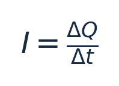
其中 \Delta Q 单位 C，\Delta t 单位 s。瞬时电流为 i=dq/dt。
电压和电势能变化：
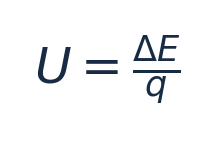
其中 \Delta E 单位 J，q 单位 C；具体符号与转移方向有关。
欧姆定律：
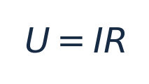
适用于满足欧姆型关系的电阻元件。逆变器、电池、开关电源和光伏组件不能整体简化成一个不变的电阻。
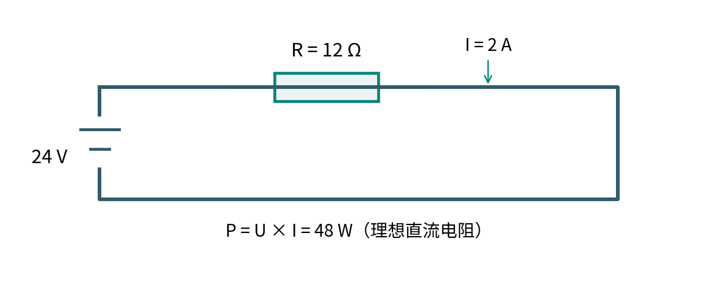
教学示例：24 V 电源接 12 Ω 理想电阻，电流 I=24/12=2 A，功率 P=24×2=48 W。在电阻不变时提高电压，电流上升，电阻发热功率按电压平方增长。
2.3 导体、绝缘体与半导体
| 类型 | 特点 | 典型用途 |
|---|---|---|
| 导体 | 电荷比较容易移动 | 铜导线、母排、端子 |
| 绝缘体 | 规定条件下电导率很低 | 电缆绝缘层、设备绝缘结构 |
| 半导体 | 导电特性可受电场、材料结构等控制 | 二极管、MOSFET、IGBT |
绝缘不表示任何条件下都不能导电。超过绝缘设计边界可能发生漏电、击穿和电弧。
三、核心知识详解
3.1 电路的组成与基本定律
3.1.1 电路的构成
基本电路通常包含电源、导电通路、负载，以及必要的开关与保护元件。电路正常工作需要符合其连接和控制条件。
有电压不代表一定有电流：开路电池端子仍可能有电压，但无外部持续负载电流。有电流也不代表全部电流都对应有用有功功率：可能存在无功交换、损耗或辅助功耗。
| 状态 | 含义 | 可能现象 |
|---|---|---|
| 正常通路 | 电流沿预期路径流动 | 电压、电流处于工作范围 |
| 开路 | 预期导电路径断开 | 该支路电流接近零 |
| 短路 | 非预期低阻抗通路 | 故障电流可能很大 |
| 接触不良 | 接触电阻异常或间歇断开 | 局部发热、电压波动 |
| 漏电 | 电流沿非预期绝缘路径流动 | 可能触发保护或带来触电风险 |
短路电流仍受电源内阻、线路阻抗、电源限流能力和保护装置影响；不同电源的短路响应可能不同。
3.1.2 串联和并联
串联：元件流过同一支路电流，端电压分配。
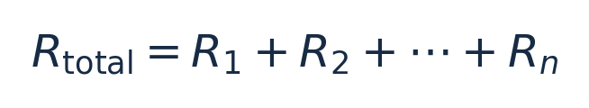
并联：支路端电压相同，总电流等于支路电流之和。
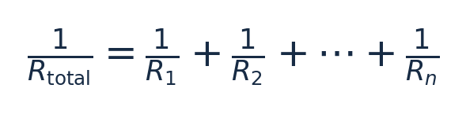
以上为理想电阻网络关系；光伏组件、电芯不是固定电阻，不能直接使用这些公式描述它们的所有工作特性。
3.1.3 基尔霍夫电流定律（KCL）
在适用的集总电路节点模型中，流入电流之和等于流出电流之和：
根本依据是电荷守恒。存在显著电荷积累或高频分布效应时应采用更完整的动态模型。
3.1.4 基尔霍夫电压定律（KVL）
在适用的集总电路模型中，沿闭合回路各电压升降的代数和为零：
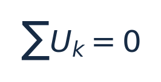
若有显著时变磁通，需要正确纳入感应电动势，不能机械使用静态形式。
HEMS 关联：KCL 讲的是电流守恒；能流图一般展示有功功率。不能从电流守恒直接推出所有设备的功率可以不加条件地相加。必须先定义测量端口、方向、功率类型和时间边界。
3.2 电功率、电能、损耗与效率
3.2.1 功率
功率表示单位时间能量传递或转换速率。同一端口、参考方向配套时：
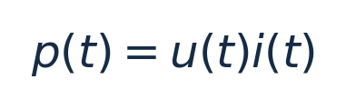
p 单位 W，u 单位 V，i 单位 A。
稳定直流系统：
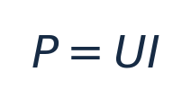
纯电阻：
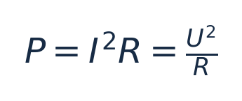
交流系统计算有功功率一般还要考虑相位和波形。
3.2.2 电能
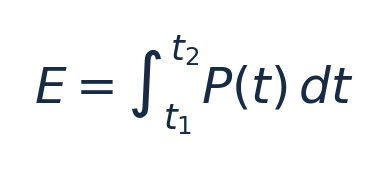
当功率恒定：
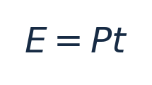
- W、kW 是功率单位，
1 kW=1000 W。 - Wh、kWh 是电能单位，
1 kWh=1000 Wh。 1 kWh=3.6×10^6 J。
示例：2 kW 负载运行 3 小时，消耗 6 kWh。若负载随时间变化，则必须积分或分时段累计，不能拿某一瞬时值乘以全天小时数。
| 时间段 | 平均功率 | 时长 | 电能 |
|---|---|---|---|
| 00:00—06:00 | 0.3 kW | 6 h | 1.8 kWh |
| 06:00—12:00 | 0.8 kW | 6 h | 4.8 kWh |
| 12:00—18:00 | 1.2 kW | 6 h | 7.2 kWh |
| 18:00—24:00 | 1.5 kW | 6 h | 9.0 kWh |
| 合计 | — | 24 h | 22.8 kWh |
3.2.3 能量守恒与功率平衡
系统能量守恒可以写为：
所有能量项必须采用一致的统计边界、单位和核算口径。对应的准稳态功率模型为：
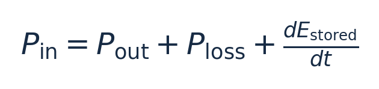
该表达式包含内部储能变化项，比简单认为“输入功率永远等于输出功率”更完整。
3.2.4 损耗
| 损耗类型 | 机理 | 典型位置 |
|---|---|---|
| 电阻损耗 | 电流使导体发热 | 导线、母排、接插件 |
| 半导体导通损耗 | 导通压降或导通电阻 | 逆变器、DC/DC |
| 开关损耗 | 功率器件切换时消耗能量 | 电力电子设备 |
| 磁性损耗 | 绕组电阻、磁芯损耗 | 电感、变压器 |
| 辅助功耗 | 控制、风扇、显示等用电 | 设备内部 |
电阻损耗：
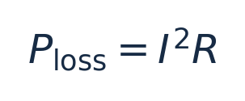
当导线电阻 0.1 Ω，10 A 损耗 10 W，20 A 损耗 40 W。电流加倍，电阻损耗为原来的四倍（电阻不变时）。
3.2.5 转换效率
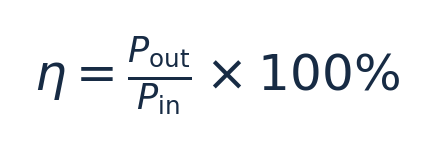
适用于输入输出功率口径对应、稳定运行的比较。示例：逆变器直流输入 5000 W、交流输出有功 4750 W，效率为 95%，其余 250 W 对应损耗及辅助消耗。
效率随电压、负载率、温度等变化；铭牌最大效率不等于每时刻实际效率。
3.3 直流、交流、有效值与相位
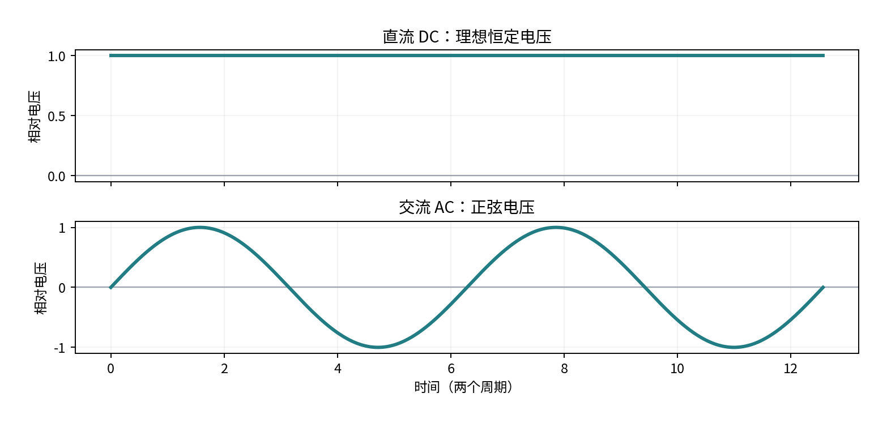
3.3.1 直流电（DC）
直流电流方向不周期性反转。理想恒定直流电压：
现实直流电可以存在纹波或波动，因此“直流”不等于数值永远不变。常见直流场景有电池端口、光伏组件输出端、逆变器直流母线。
3.3.2 交流电（AC）
正弦交流电压模型：
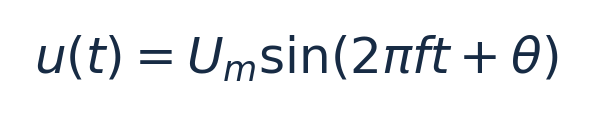
U_m 是峰值（V），f 是频率（Hz），t 是秒，\theta 是初相角（rad）。
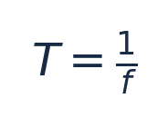
50 Hz 对应周期 20 ms；实际电网频率因地区与供电系统而异。电网频率、功率器件开关频率、设备采样频率和 APP 刷新频率是不同概念。
3.3.3 有效值 RMS
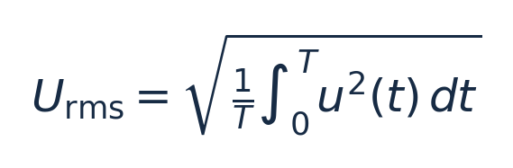
理想正弦波：
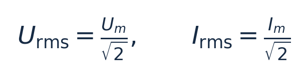
230 V 正弦交流电的峰值约 325.3 V。该根号 2 关系不适用于任意畸变波形。
3.3.4 相位
同频率正弦电压和电流可以有相位差：
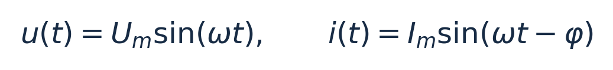
\omega=2\pi f 是角频率（rad/s），φ 是相位差。按此表达式，φ>0 表示电流滞后电压。相位差影响交流有功与无功功率。
3.4 有功、无功、视在功率与功率因数
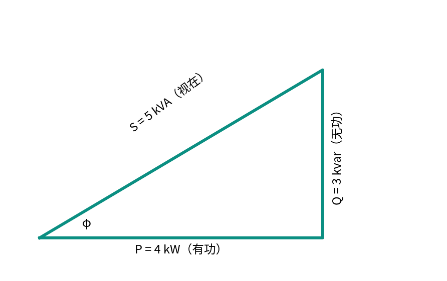
3.4.1 有功功率 P
有功功率是某时间窗口内平均能量传递或转换的速率：
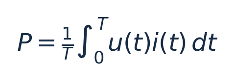
单相正弦稳态：
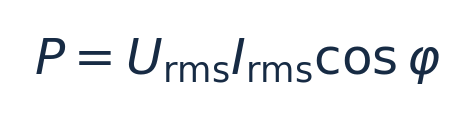
单位 W、kW。示例：230 V、10 A、功率因数 0.8，对应有功功率 1840 W。
3.4.2 无功功率 Q
在正弦稳态中，电感、电容与电源周期性交换能量：
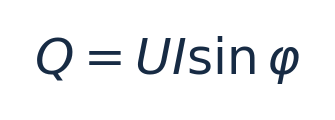
单位 var、kvar。按常见被动符号约定，感性负载吸收正无功，容性负载吸收负无功；实际设备寄存器符号可能不同。无功不是“毫无作用”，它会影响电流、线路容量和电网电压调节。
3.4.3 视在功率 S
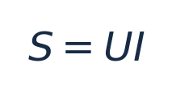
单位 VA、kVA；U、I 均为有效值。它反映交流端口电压和电流的组合容量。VA 不直接等于 W。
在单相正弦稳态经典功率模型下：
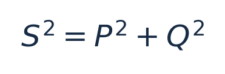
非正弦、谐波和不平衡情形需要使用适用的功率定义，不能无条件套用该三角关系。
3.4.4 功率因数 PF
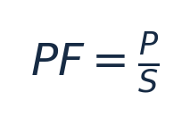
单相正弦稳态：PF=\cosφ。功率因数与转换效率不同：前者衡量 P 与 S 的关系，后者衡量输出输入的有用能量转换关系。
| 维度 | 功率因数 PF | 效率 η |
|---|---|---|
| 含义 | 有功/视在功率 | 有用输出/输入 |
| 典型公式 | P/S | Pout/Pin |
| 关注重点 | 交流相位、电流和容量 | 转换损耗 |
| 数值 0.9 的意义 | P 为 S 的 90% | 有用输出为输入的约 90% |
3.4.5 逆变器的有功与无功容量约束
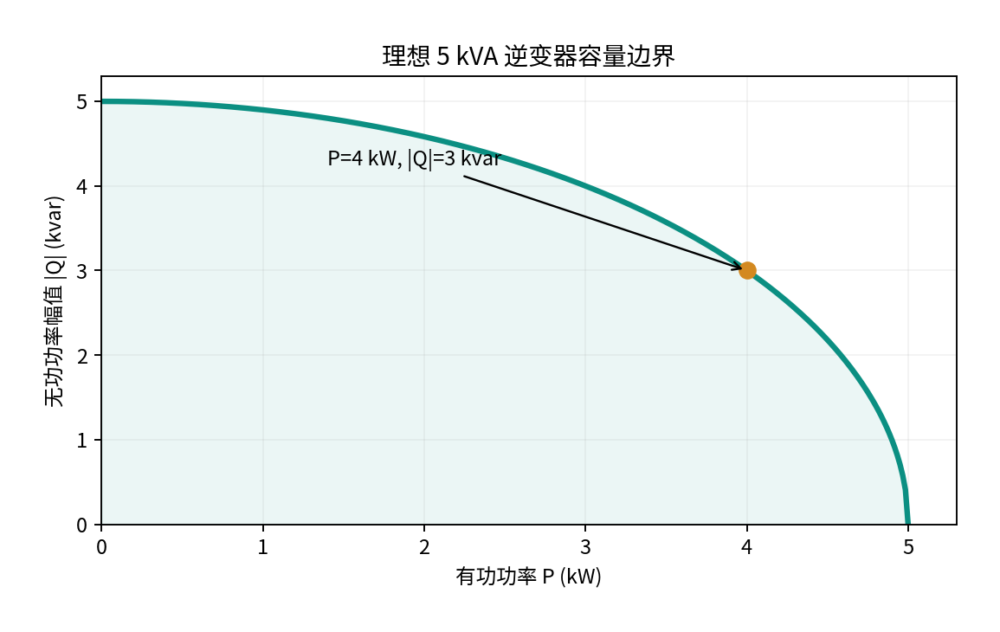
假设逆变器额定视在容量 5 kVA，在理想正弦稳态容量模型中：
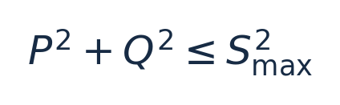
若 P=4 kW，则 |Q|_{\max}=√{25-16}=3 kvar；P=5 kW 时，该理想容量圆上允许无功幅值为零。
这是教学模型。实际设备还可能有热限制、电流限制、P-Q 能力曲线及不同控制优先级，不能据此直接定义产品的可设值范围。
3.5 单相、三相与不平衡
3.5.1 单相系统
常见单相配电系统可能包含 L（相线）、N（中性线）、PE（保护接地导体）。不同地区的接线制式及电压并不相同，不宜默认所有地区都是 220/230 V 的 L-N 系统。
3.5.2 三相系统
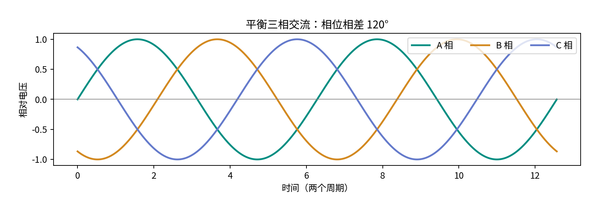
理想对称三相电压相位相差 120°：
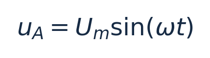
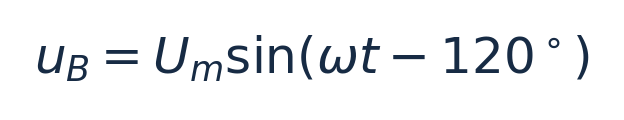
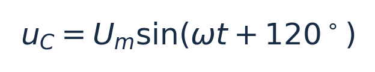
三相适合较大功率输送、三相电机和复杂配电场景。平衡时三相瞬时有功功率之和可保持恒定。
3.5.3 相电压与线电压
- 相电压：通常是相线与中性点之间的电压。
- 线电压：两根相线之间的电压。
对称平衡星形系统：
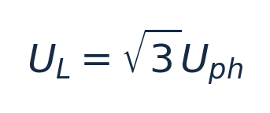
230 V 相电压对应线电压约 398.4 V；400 V 是常见标称值，但非全球通用值。
3.5.4 星形 Y 和三角形 Δ
| 连接 | 电压关系 | 电流关系 |
|---|---|---|
| 平衡星形 Y | U_L=√3U_{ph} |
I_L=I_{ph} |
| 平衡三角形 Δ | U_L=U_{ph} |
I_L=√3I_{ph} |
3.5.5 三相有功功率
平衡三相正弦稳态：
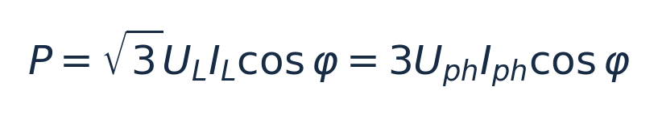
400 V 线电压、10 A 线电流、PF=0.9 时，有功功率约 6.24 kW。
对于不平衡三相，原则上逐相计算：
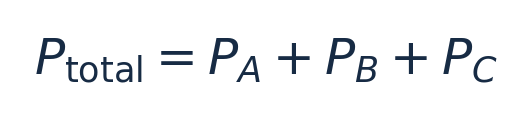
若各相满足正弦稳态，则：
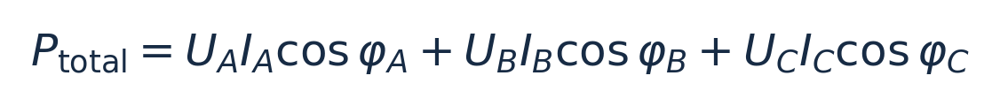
三相不平衡示例：
| 相 | 电压 | 电流 | 假设 PF=1 的有功功率 |
|---|---|---|---|
| A | 230 V | 10 A | 2.30 kW |
| B | 230 V | 3 A | 0.69 kW |
| C | 230 V | 5 A | 1.15 kW |
| 总计 | — | — | 4.14 kW |
三相不平衡可导致某相电流过大、中性线电流和发热风险、设备性能降低等问题。
一个重要反例：按“电网流入家庭为正”，三相 P 分别为 +2 kW、−1 kW、−1 kW，总功率为零，但三相并非都没有功率交换。总功率为零不意味着各相均未购电或上网；具体计量结算还取决于电表和当地规则。
3.6 电阻、电容、电感与阻抗
3.6.1 电阻 R
理想纯电阻交流负载中，电压电流同相，功率因数为 1，主要将电能转换为热能。
3.6.2 电容 C
电容主要通过电场储能，单位 F：
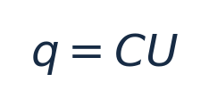
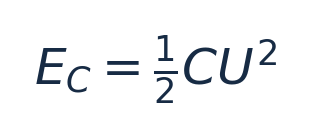
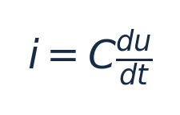
理想正弦稳态下电容电流超前电压 90°。电容用于直流母线平滑、滤波、无功补偿等。理想电容电压不能在有限电流条件下瞬间突变。
3.6.3 电感 L
电感主要通过磁场储能，单位 H：
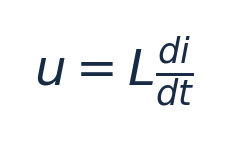
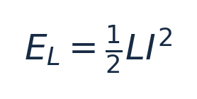
理想正弦稳态下电感电流滞后电压 90°。电感可用于滤波、开关电源能量转换、限制电流变化等。理想电感电流不能在有限电压条件下瞬间突变。
3.6.4 电抗与阻抗
理想电感感抗：
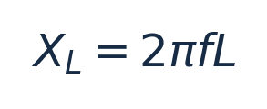
理想电容容抗大小：
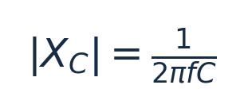
单位均为 Ω。频率越高，感抗越大，容抗越小。
串联 RLC 正弦稳态复阻抗：
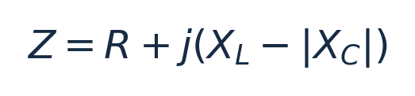
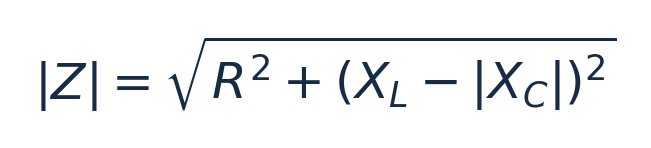
j 为虚数单位，用于描述相位。在相量法中：
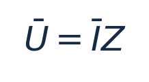
产品经理需要理解滤波、谐振、相位及波形会影响电气运行，不必在本模块深入设计滤波器。
3.7 电磁感应、变压器与电能变换
3.7.1 法拉第电磁感应
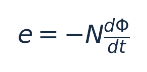
e 为感应电动势（V），N 为匝数，\Phi 为磁通量（Wb）。负号体现楞次定律：感应作用方向反抗引起磁通变化的原因。
3.7.2 理想变压器
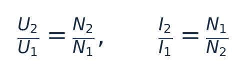
变压器依靠变化磁通耦合传递电能。理想情况下升高电压会伴随电流下降，不会凭空增加功率。例如 230 V 升至 460 V，假设输入 2300 W、功率因数为 1、忽略损耗，则输入 10 A、输出 5 A。
实际变压器存在铁损、铜损和漏磁等限制。
3.7.3 电能变换
| 变换 | 输入 | 输出 | 功能 |
|---|---|---|---|
| AC/DC 整流 | 交流 | 直流 | 交转直 |
| DC/AC 逆变 | 直流 | 交流 | 直转交 |
| DC/DC | 直流 | 直流 | 改变直流电压电流 |
| AC/AC | 交流 | 交流 | 改变交流参数 |
功率电子设备通过开关器件、控制及滤波执行转换。用户设置的输出功率最终仍受物理端口电压、电流、热设计和保护条件限制。
3.8 额定参数与电气约束
3.8.1 不同参数的区别
| 概念 | 含义 | 示例 |
|---|---|---|
| 额定值 | 规定条件下声明的运行参数 | 额定功率 5 kW |
| 允许运行范围 | 满足工作要求的参数区间 | 某工作电压范围 |
| 最大允许值 | 特定条件下的极限 | 最大输入电压 |
| 保护阈值 | 触发保护判断的条件 | 过流、过温阈值 |
| 用户设定值 | 期望运行目标 | 输出目标 3 kW |
| 实际测量值 | 真实反馈量 | 实际输出 2.8 kW |
额定值不意味着所有温度、输入电压和功率因数下均能保持该输出；最大有功功率与最大视在功率也可能不同。
3.8.2 多约束共同作用
假设直流端口最大连续电流为 20 A，仅按 P=UI：
| 电压 | 电流上限 | 对应功率 |
|---|---|---|
| 40 V | 20 A | 800 W |
| 48 V | 20 A | 960 W |
| 60 V | 20 A | 1200 W |
不能由此推断提高电压可无限提高输出；真实设备还有限压、限功率和温度条件。实际值低于用户设定值，还可能与源侧供能不足、其他控制策略、采样差异等有关。
3.9 电气测量与电表
3.9.1 常见测量量
| 量 | 符号 | 单位 | 意义 |
|---|---|---|---|
| 电压 | U | V | 指定两点电势差 |
| 电流 | I | A | 电荷流动速率 |
| 有功功率 | P | W/kW | 平均有功传输速率 |
| 无功功率 | Q | var/kvar | 交流储能交换相关功率 |
| 视在功率 | S | VA/kVA | 有效电压乘有效电流 |
| 功率因数 | PF | 无量纲 | P/S |
| 频率 | f | Hz | 波形周期频率 |
| 电能 | E | Wh/kWh | 累计传递能量 |
| 绝缘电阻 | Rins | Ω/MΩ | 绝缘路径阻抗特性中的电阻指标 |
接口只有 voltage=230 还不够：应知道电气测量端点、相别、交流有效值或直流值、单位和测量时刻。
3.9.2 电流测量方法
- 分流电阻：已知电阻上的压降测电流，
I=U_{shunt}/R_{shunt}。需要考虑发热、共模电压、精度和隔离。 - 电流互感器 CT：利用交流电磁感应实现电流变换，通常用于交流计量。标称 100:5 的 CT 在规定条件下，一次侧 100 A 对应二次侧 5 A。CT 不天然适合测量稳态直流，二次侧带一次电流时不得随意开路。
- 霍尔电流传感器：利用磁场影响进行测量，可设计用于直流和交流。
3.9.3 电表数据形成路径
实时功率与累计电能不同：某时刻 2.5 kW 不能替代一段时间的电量。两次累计电能 1850.6 kWh、1852.1 kWh，相减得 1.5 kWh，前提是计数器未重置、未溢出、倍率一致且确属同一量。
双向电表可能分别计量正向和反向有功电能，但“正向/反向”必须依据计量参考方向解释，不能假设全世界都将正向定义为购电。
3.9.4 精度、分辨率、采样与上报
- 测量准确度/精度相关指标：关注结果与被测量值的一致程度；准确度等级、误差限和不确定度是不同概念。
- 分辨率：可区分的最小变化；显示 0.1 W 不意味着误差小于 0.1 W。
- 采样频率：测量电路获取波形样本的频率。
- 上报频率：数据传输到上层的频率。
- 界面刷新频率：APP 更新显示的频率。
三种“频率”不必相等，上报值还可能经过平均或滤波。时间戳差异会导致各设备瞬时功率短时间不平衡。
3.9.5 电能质量与谐波
| 现象 | 含义 | 可能影响 |
|---|---|---|
| 电压暂降 | 电压短时下降 | 复位、设备中断 |
| 电压暂升 | 电压短时升高 | 过压保护、绝缘应力 |
| 电压中断 | 电压供给中断 | 负载停止 |
| 频率偏差 | 偏离参考频率 | 并网控制及保护 |
| 电压不平衡 | 三相电压不对称 | 三相设备性能下降 |
| 谐波 | 基波整数倍频率分量 | 损耗、发热、干扰 |
| 闪变 | 特定电压波动使光输出产生可感变化 | 照明体验 |
50 Hz 电网的 3 次谐波为 150 Hz，5 次谐波为 250 Hz。实际非线性负载和功率电子系统可产生非正弦电流，简单 \cosφ 未必等于完整功率因数。
IEC 61000-4-30:2025 规定 50/60 Hz 系统的多项电能质量测量方法，但不自动给出全球统一的并网限值。
3.10 电气安全、接地与保护
3.10.1 电击风险
人体电击风险与电流大小、流经路径、接触持续时间、电流频率与波形、人体和环境阻抗等因素相关。不能只用“电压低”或单个固定电流值判断绝对安全。
3.10.2 典型故障
| 类型 | 物理含义 | 风险 |
|---|---|---|
| 过流 | 超出允许电流 | 发热、导线损坏 |
| 短路 | 非预期低阻抗连接 | 故障电流、电弧、损坏 |
| 过压 | 超出允许电压 | 绝缘及元件损坏 |
| 欠压 | 低于运行条件 | 运行不稳定 |
| 过温 | 超出热边界 | 寿命下降、损坏 |
| 绝缘故障 | 绝缘能力下降 | 电击和火灾风险 |
设备可能采取限流、降额、断开、锁定或条件满足后恢复等措施，但不能假设不同厂商统一采用同一恢复逻辑。
3.10.3 L、N、PE
- L：相线，正常情况下参与电能输送。
- N：中性线，在相应系统中可承担正常工作电流。
- PE：保护接地导体，用于电击防护。
N 与 PE 作用不同，不得任意互换；保护方式还取决于 TN、TT、IT 等接地系统及保护装置配合。
3.10.4 剩余电流保护 RCD
RCD 检测相关带电导体的电流不平衡，从而识别可能的剩余电流并在规定条件下动作。RCD 不一定具有过载或短路保护；不同类型对直流成分及波形的适用性也不同，需结合电源、设备和适用标准选型。
3.10.5 防孤岛基础
非计划孤岛是主电网断电后，分布式电源仍向局部网络供电的状态。普通并网设备通常需要具备符合适用并网要求的防孤岛能力。它不同于经过专门设计的备电或离网供电。
是否能在电网停电后继续向家庭负载供电，不只由“有无电池”决定，还与拓扑、电气隔离、逆变器能力、保护与控制条件有关。
3.10.6 用户控制与设备保护
用户设置 4 kW，设备因过温实际降额到 2.5 kW：4 kW 是控制目标，2.5 kW 是实际状态，过温降额是保护或运行约束。软件设置不能绕过物理安全边界。
IEC 61140:2016 提供电击防护基础原则。项目还需按照国家/地区、供电制式、产品类别和现行适用标准判断。本文不构成带电作业或电气安装指导。
3.11 功率方向、参考点与符号约定
3.11.1 正负号取决于参考方向
电路理论常用被动符号约定：电流从元件正电压端流入时，p=ui>0 表示吸收功率；p<0 表示向外释放功率。
但是设备接口可以使用别的符号体系。
示例：电池实际放电 1000 W
| 接口定义 | 上报值 |
|---|---|
| 正值为放电 | +1000 W |
| 正值为电池吸收功率（充电） | −1000 W |
两个数都可能正确，只是约定不同。接口符号必须与物理方向一一对应。
3.11.2 交流功率方向与波形
交流电流每周期改变方向，但不能据此认为电网每半周期在购电与上网间切换。应依据测量参考方向，在指定窗口上计算有功功率方向。
3.11.3 功率平衡示例
假设家庭交流母线为参考边界，光伏已经换算为交流侧输入，电网输入为正，电池当前充电：
这里假定近似稳态，辅助功耗等纳入损耗，不单独展开短时储能变化。若电池改为放电，需要更新功率方向与表达式。
不得直接相加：不同电气侧、不同时间、不同参考方向或不同功率类型的数值。
四、工作场景示例
本节均为教学示例，不代表 HaierEnergy、青络或某型号设备的实际实现。
场景 1：光伏 5 kW、负载 3 kW，多余电能去哪了？
假设光伏交流侧输出 5 kW，家庭负载 3 kW，电池不充放电、忽略其他损耗，且电网允许接收多余电能：
多余的 2 kW 可以馈入电网。若禁止馈网，系统需要限发或通过允许的储能、可控负载等方式消纳。能量守恒决定功率必须有去向；具体控制方式由设备能力决定。
场景 2：电流 10 A 能直接推出功率吗？
不能。不同系统：
| 系统 | 条件 | 功率 |
|---|---|---|
| DC | 48 V、10 A | 480 W |
| 单相正弦 AC | 230 V、10 A、PF=1 | 2300 W |
| 单相正弦 AC | 230 V、10 A、PF=0.8 | 1840 W |
| 平衡三相正弦 AC | 400 V 线电压、10 A、PF=0.9 | 约 6235 W |
必须先知道电压、交直流、相数、波形和功率因数等条件。
场景 3：逆变器上报有功功率为 0 W，是否已关闭？
未必。可能是待机、并网但零有功、只进行无功交换、辅助电源仍在消耗电能，或小数被取整。activePower=0 不等于设备离线、故障或完全无电流。
场景 4：电表返回 −1500 W
假设电表约定“电网向家庭为正”，则表示约 1.5 kW 向电网馈电；若接口采用反向定义，结论也反向。
推荐理解路径：确认计量位置与安装方向 → 确认寄存器符号定义 → 结合其他量判断流向 → 转换为购电/上网含义。
场景 5：电池输出 1 kW，能运行多久？
仅凭功率不够，还需了解当前可用电能、能量转换损耗、截止 SOC、温度及功率变化。
假设负载侧可用电能 4 kWh，恒定负载为 1 kW：
这只是简化估算，并非真实储能系统续航承诺。
场景 6：电表、逆变器与负载功率对不上
逆变器输出 4.0 kW、家庭负载 2.5 kW、电表馈网 1.4 kW，差额 0.1 kW。首先考虑测量点不同、未计入支路、损耗、时间戳差异、计量误差和舍入，而不能仅凭差额判定故障。
场景 7：设置 5 kW，实际达不到
某直流端口 100 V、电流上限 40 A，仅由电流限制得到：
用户目标为 5 kW，并不改变端口 4 kW 的理论电流限制。分析时区分：目标值 → 当前运行能力 → 实际测量值。
五、易混淆点与知识关联
5.1 高频易混淆概念
| 概念对 | 正确理解 |
|---|---|
| 电压 / 电流 | 电压是电势差，电流是电荷流动速率 |
| 电流 / 功率 | 电流存在不意味着有功功率必然相同 |
| 功率 / 电能 | 功率是速率，电能是累计量 |
| kW / kWh | 分别是功率、电能 |
| W / VA | 分别是有功功率、视在功率 |
| 功率因数 / 效率 | 分别是 P/S、有用输出/输入 |
| 交流有效值 / 峰值 | 仅理想正弦波有 U_m=√2U_{rms} |
| 相电压 / 线电压 | 测量端点不同 |
| 三相净功率为零 / 三相均零 | 净功率可因正负抵消而为零 |
| 正功率 / 放电 | 必须先确认符号约定 |
| 零功率 / 设备关闭 | 零有功不必然表示关闭 |
| 额定值 / 最大值 | 定义和条件不同 |
| 设置值 / 实测值 | 目标和实际响应不同 |
| 保护阈值 / 用户控制目标 | 分别关系到安全保护与功能控制 |
| 显示精度 / 测量准确度 | 小数位数不等于准确度 |
| 采样频率 / 上报频率 | 测量和通信过程不同 |
| N / PE | 中性线和保护接地导体不能互换 |
| 漏电保护 / 短路保护 | 检测机理和覆盖范围不同 |
| 并网 / 必然上网 | 并网连接不意味着持续馈电 |
5.2 与其他模块的关系（仅简述）
- 光伏系统：进一步学习组件 I-V/P-V 特性、串并联、最大功率点。
- 逆变器：进一步学习 DC/AC、并网同步、功率控制、滤波和 P-Q 能力曲线。
- 储能与 BMS：进一步学习电芯充放电、SOC、SOH、BMS 保护与功率限制。
- 电表、并网与离网：进一步学习双向计量、零馈网、备电、反孤岛及切换机制。
- 电气拓扑与 HEMS：进一步学习不同设备连接、测量边界与完整能流平衡。
电工基础解释物理规律；设备模块解释硬件实现；HEMS 解释如何在物理条件许可的范围内监测、展示和控制。
六、重点索引与参考资料
6.1 公式速查表
| 知识点 | 公式 | 适用条件 |
|---|---|---|
| 平均电流 | I=\Delta Q/\Delta t |
指定时间区间 |
| 欧姆定律 | U=IR |
欧姆型电阻 |
| 瞬时功率 | p(t)=u(t)i(t) |
电气端口与参考方向匹配 |
| 稳定直流功率 | P=UI |
稳定直流 |
| 电阻功率 | P=I^2R |
电阻性耗能 |
| 电能 | E=\int P(t)dt |
规定时间窗口 |
| 恒定功率电能 | E=Pt |
功率不随时间变化 |
| 电阻损耗 | P_{loss}=I^2R |
电阻不变时可比较平方关系 |
| 效率 | \eta=P_{out}/P_{in} |
输入输出边界对应 |
| 正弦电压有效值 | U_{rms}=U_m/√2 |
正弦波 |
| 周期 | T=1/f |
周期信号 |
| 单相有功 | P=UI\cosφ |
正弦稳态 |
| 单相无功 | Q=UI\sinφ |
正弦稳态 |
| 视在功率 | S=UI |
有效值 |
| 功率因数 | PF=P/S |
功率口径一致 |
| 功率三角形 | S^2=P^2+Q^2 |
经典正弦稳态模型 |
| 星形线电压 | U_L=√3U_{ph} |
平衡对称星形 |
| 三相有功 | P=√3U_LI_L\cosφ |
平衡三相正弦稳态 |
| 感抗 | X_L=2\pi fL |
理想线性电感 |
| 容抗大小 | |X_C|=1/(2\pi fC) |
理想电容 |
| 电容储能 | E_C=\frac12CU^2 |
理想线性电容 |
| 电感储能 | E_L=\frac12LI^2 |
理想线性电感 |
| 理想变压器 | U_2/U_1=N_2/N_1 |
理想变压器模型 |
6.2 按问题查找知识
| 实际关心的问题 | 对应章节 |
|---|---|
| 看懂接口功率字段 | 3.2、3.4、3.9、3.11 |
| 判断能流平衡 | 3.1、3.2、3.11 |
| 理解电池充放电 | 3.2、3.7、3.11 |
| 理解逆变器功率限制 | 3.4、3.7、3.8 |
| 分析三相差异 | 3.4、3.5、3.9 |
| 分析电表计量 | 3.5、3.9、3.11 |
| 区分控制与保护 | 3.8、3.10 |
| 分析零值、负值 | 3.2、3.9、3.11 |
| 判断电力数据偏差 | 3.8、3.9、3.10 |
6.3 参考资料
以下链接用于查阅通用原理、官方标准范围，不等于特定项目已经采用该标准或使用了某个具体条款。
- OpenStax · University Physics Volume 2, Chapter 10 — Direct-Current Circuits：电路、欧姆定律、基尔霍夫定律。
https://openstax.org/books/university-physics-volume-2/pages/10-introduction - OpenStax · University Physics Volume 2, Chapter 15 — Alternating-Current Circuits：交流电、RLC、电力、功率因数、变压器。
https://openstax.org/books/university-physics-volume-2/pages/15-introduction - IEEE 1459-2025 — Definitions for the Measurement of Electric Power Quantities：正弦、非正弦、平衡与不平衡情形下的功率测量术语。
https://standards.ieee.org/ieee/1459/7578/ - IEC 61000-4-30:2025 — Power quality measurement methods：50/60 Hz 系统电能质量测量方法。
https://webstore.iec.ch/en/publication/71611 - IEC 61140:2016 — Protection against electric shock：电击防护基础原则。
https://webstore.iec.ch/en/publication/23997
标准适用声明：具体产品、设备型号、销售区域以及当地并网与安装条件，应核实适用的现行法规、标准版本、修订及强制要求；不应把上述通用参考直接转化为某一国家或某一设备的参数限值。
七、本模块总结
- 物理规律是底座：设备和软件都必须遵守电压、电流、功率和能量守恒的基本关系。
- 功率与电能不同：kW 描述速率，kWh 描述累计，不能凭某时刻功率推断全天电量。
- 交流电需要考虑相位与波形：有功、无功、视在功率及功率因数各有定义与适用边界。
- 三相系统可能不平衡：总功率可以掩盖各相不同的电能交换情况。
- 功率正负需要参考方向：字段数值不脱离测量位置、单位、符号和时间戳理解。
- 设备受到多重约束：额定值、最大值、保护阈值、目标设定值与实测值是不同概念。
- 电力数据不是物理世界本身：测量方式、采样窗口、准确度、倍率、时间同步与数据传输都会影响展示结果。
最终目标：不仅能读懂数据，还能从电工原理解释设备为何这样运行、哪些现象可能正常、哪些结论需要进一步核实。
电工基础模块 · 完